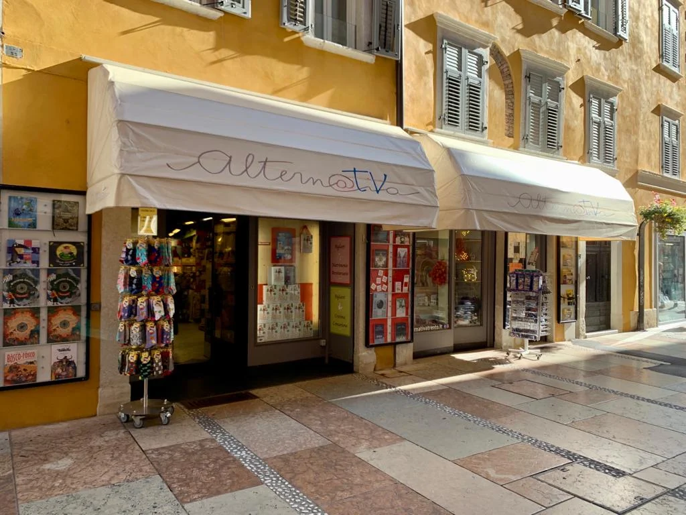
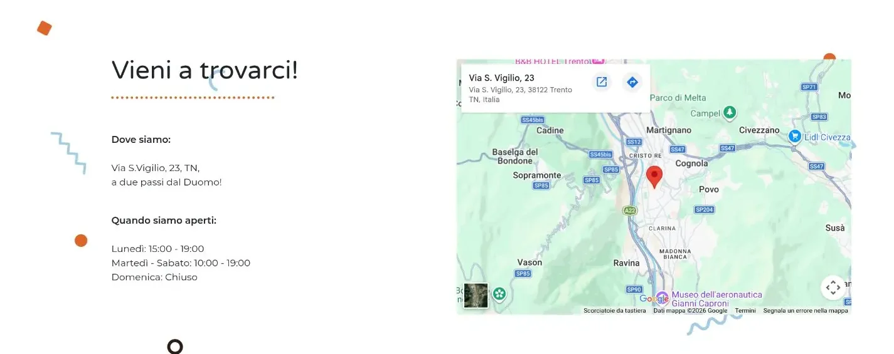

Altern@tiva Trento
Cinque giorni per preparare un negozio su due piani


A Trento, Altern@tiva trasferiva il magazzino mentre arrivavano bancali di giochi. Il personale aveva bisogno di una cassa pronta a emettere scontrini e di un modo pratico per rifornire le vetrine senza lasciare i clienti in attesa.
Come si prepara la cassa mentre arriva ancora la merce?
La scadenza era di cinque giorni. Accanto ai giochi da sistemare c’erano gli articoli in arrivo, i codici da ritrovare in cassa e i documenti da emettere al primo acquisto. I due piani aggiungevano un problema quotidiano. Se si vendeva un gioco esposto in vetrina, chi lavorava in magazzino come poteva sapere quale pezzo riportare su?
Dal bancale al primo scontrino
Abbiamo dato precedenza a quello che serviva già il primo giorno. Un gioco doveva entrare in magazzino con il suo codice, essere riconosciuto alla scansione e arrivare sullo scontrino. Abbiamo organizzato catalogo e codici a barre in Odoo, il gestionale del negozio, perché chi riceveva i bancali e chi batteva i primi acquisti lavorassero sugli stessi articoli.
Dalla scansione allo scontrino, con una sola registrazione
Abbiamo personalizzato la schermata di vendita per il personale al banco e collegato la cassa alla stampante fiscale. Chi serve il cliente richiama il gioco dal codice a barre e chiude la vendita. Se serve una fattura elettronica, il negozio riutilizza i dati della vendita per emetterla e trasmetterla al Sistema di Interscambio (SdI).
Un gioco esce dalla vetrina. In magazzino compare cosa recuperare.
Abbiamo installato uno schermo per piano, aggiunto un access point tra i due livelli per portare il Wi-Fi fino al magazzino e disegnato una vista per ciascun ruolo. Quando si vende un gioco esposto, chi è in magazzino lo vede nella lista e lo spunta appena lo recupera. Può raccogliere più articoli nello stesso giro. Chi resta al banco vede cosa manca ancora, senza fare le scale per controllare.
Banco vendita
Ultime vendite dalla vetrina
- Trenino in legno1 pz
- Orso di peluche1 pz
Magazzino
Da riportare in vetrina
- Trenino in legno
- Orso di peluche
Vetrina rifornita.
La stessa cassa riconosce clienti abituali e buoni regalo
Per chi torna spesso abbiamo configurato i programmi fedeltà direttamente alla cassa. Per chi vuole fare un regalo e preferisce lasciare la scelta a chi lo riceve, il negozio può emettere un buono fisico o digitale. Il personale lo ritrova nello stesso gestionale quando il destinatario torna a scegliere il suo gioco.
Cercare un gioco da casa, venire a sceglierlo in negozio
La titolare preferisce incontrare i clienti di persona. Sul sito si può esplorare il catalogo per età, marca o categoria prima di mettersi in strada. L’invito «Vieni a trovarci!» riunisce indirizzo, orari e mappa, così una famiglia può organizzare la visita. Chi preferisce ricevere il gioco a casa può concludere l’ordine online.



Il risultato.
Una vendita al banco ora avvisa anche chi deve rifornire la vetrina. Il personale può raggruppare i giochi da riportare al piano vendita e dedicare il tempo al banco a chi sta scegliendo un regalo. Il sito estende questa possibilità di scelta a chi cerca il negozio su Google.
- Visualizzazioni su Google
- 26.100 Volte in cui il sito è comparso nei risultati di ricerca.
- Clic verso il sito
- 1.030 Clic ricevuti dai risultati organici di Google.
- Tasso di clic medio
- 3,9% Quota delle visualizzazioni che ha generato un clic.
Google Search Console, periodo di tre mesi documentato nel portfolio di Samuel Nasi. Clic e visualizzazioni sono arrotondati. Le metriche riguardano la ricerca online.
Visita il sito di Altern@tiva